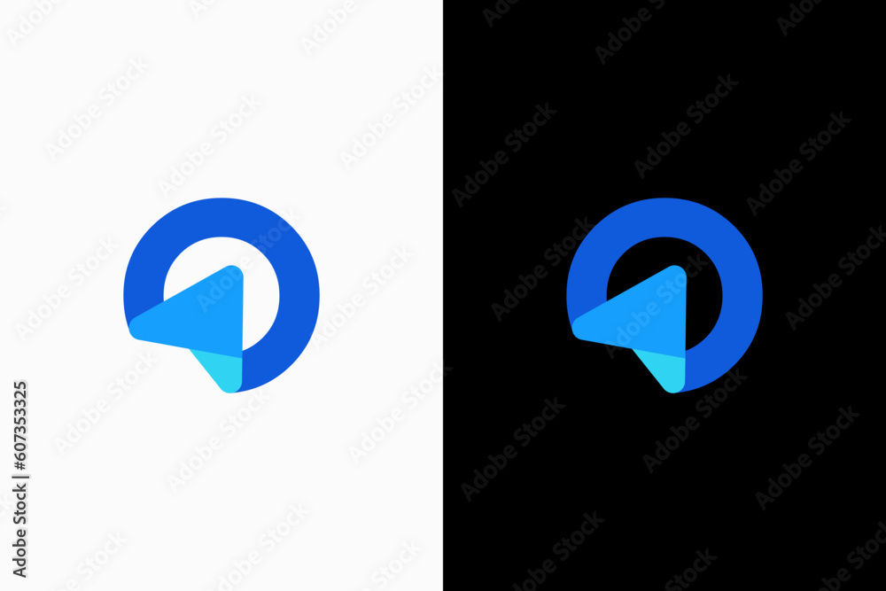

Logo exploration 2
A fresh start, from 10 October 2026, after the owner judged the current four-tile mark "bland": no presence as an Instagram icon, "a speck of dust" on its own. Each round below is a board; the first exploration stays where it was, for reference only.
Rounds
-
In progress
Round 1: ten marks with weight
Ten pictorial ideas, two of them rockets, each with mass, one idea and a two-tone fold; seven sit in a filled circle or rounded square, three stand free for comparison. Judged at 110 px avatar and 32 px favicon first.


-
In progress
Round 2: letterforms and monograms
The u, the p, the pair and the ampersand, built with the same qualities as round 1: weight, one idea, a two-tone fold, an app-icon presence.
The owner's brief for this exploration
- Authority and trust first. The owner's fifteen years back the site and the site backs the owner, so a mark must read as a serious publication a professional would cite: steady geometry, confident weight, restrained tones; never a toy, a game or a consumer app.
- Mass. Thick strokes or solid forms; no thin lines, no scattered small parts.
- One idea, readable straight away, with a small beat that makes someone say "oh nice".
- A two-tone fold: depth where two forms overlap, a lighter or deeper tone in the overlap.
- App-icon feel: a contained, filled, high-contrast form in a circle or a rounded square, where the container is part of the mark's presence. A few ideas may stand free for comparison.
- Judged at avatar and favicon size first: a 110 px circle and rounded square, and 32 px, on white and on near-black, before anything else.
- Blue by default, keeping signal blue #2B46A0 as one tone; a few alternative colours to test whether blue is the limit.

What the old exploration already tried, not to be repeated
- Rounds 1 to 3: wordmarks and mastheads, the UP shared stem, the cradle U, circle and square cut from a block, the imprint door, pilcrow, et ampersand, the eye, gauge, keystone, ribbon; Swiss squares, Bauhaus primaries, slabs, crests, arches, seals; the bowl, cornerstone, stylobate, stair, true north, fulcrum, lectern.
- Round 4: colour blocks and bands, serif and grotesque monograms, square and disc, the weighted ring, shifted halves, the sliced disc, the quarter cut, the ensign.
- Round 5: plumb lines, stands, trees of three, tripods, the chandelier, slotted discs and blocks, rings on legs.
- Round 6: hollowed discs, a one-colour figure cut through a solid disc.
- Round 7: four tiles (the current S5 mark) and triangle families, filled, outlined and carved.
- Shortlist: the profile and the sphere.
- The pattern behind them: thin lines, one flat tone, abstract geometry with no readable idea, and marks that vanish at avatar size.
Open the old exploration hub (rounds 1 to 7, kept for reference only).